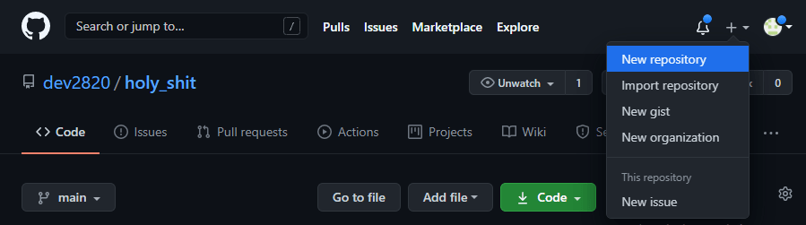
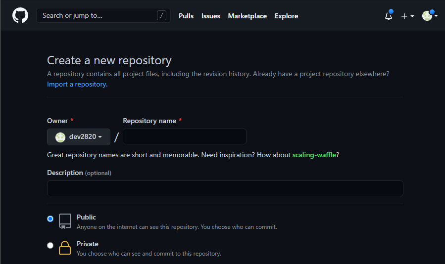
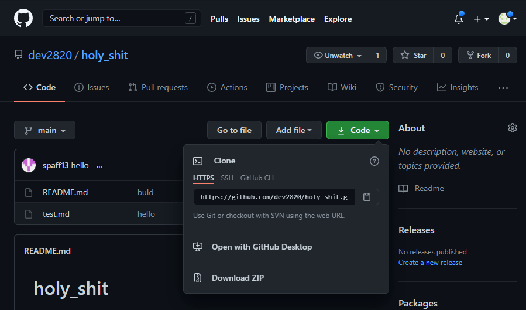

페이지들을 만들기 전, 프로젝트를 시작하기 위한 아주아주아주 간단한 git 강의입니다. 오타, 오류 지적 환영입니다.
Git?
git은 형성 관리 시스템중 하나입니다. 소스 코드 버전 관리를 위해 쓰는 툴이고, 다음의 것들을 할 수 있습니다.
- 소스 코드 되돌리기
- 소스 코드 병합
- 코드 호스팅 시스템에 소스 코드 받아오고 올리기
- 코드 분기(branch)를 통한 소스 코드 다양화
물론, 자세히 들어가면 더 많고 유용한 기능들이 있지만, 기초적인 것만 다루는 글이니 이 정도만 설명하겠습니다.
Github?
코드 호스팅 사이트 중 하나입니다. 무료로 소스 코드를 올리고 다운받을 수 있습니다.
시작하기에 앞서
시작하기에 앞서 간단한 git의 동작 원리를 알아보겠습니다.

1. staging
git은 파일 별로 바뀐 점들을 감지합니다. a_file.txt는 1번 줄이 바뀌었고, 3번 줄이 삭제됐고, 10번 줄이 새로 생겼어! 이런 식이죠.
유저는 이 변경된 파일들을 하나로 묶습니다. 한 박스에 담는다고 표현할게요. 한 박스에 파일들을 담는 행위를 staging이라고 하고, 담긴 파일들을 staged됐다고 합니다.
2. commit
다음으로 유저는 묶은 파일에 메시지를 달아줍니다. 왜 그 코드들을 바꿨는지, 전체적으로 뭐가 바뀐 건지에 대한 설명을 달아주는데, 이 메시지는 자세히 달아줄수록 좋습니다. 특히 팀 프로젝트를 진행하게 되면 메시지의 형식을 어느 정도 정해놓으면 좋습니다.
메시지 EX)
|
|
메시지까지 써 붙여서 박스를 닫고 테이프로 입구를 막는데, 이 박스를 commit이라고 합니다. 박스를 채우고 설명을 달고 밀봉하면 하나의 commit이 생기는 거죠.
유저의 PC를 집이라고 하면 유저의 집에 commit이라는 박스가 쌓이기 시작합니다. 박스들을 마구섞어 보관하게 되면 관리가 안되겠죠? git은 이 박스들을 시간순으로 나열해 줄로 연결합니다. 이 나열된 박스들(commits)를 branch라고 합니다.
3. push
마지막으로 유저는 이 branch를 분실해도 복구할 수 있게 코드 호스팅 시스템에게 복사를 의뢰합니다. github에 올린다고 할께요. github는 유저가 맡긴 branch를 복사해 진열장에 보관합니다. 유저의 권한으로 다른사람들이 이 branch를 볼 수도, 복사해 갈 수도, 변경하게 할 수도 있습니다. github에 코드가 저장되는 공간을 repository라고 하며, 이 repository는 원래 가지고 있던 branch와 유저가 올린 branch를 비교해 기존의 branch를 갱신합니다.
이렇게 git의 시스템을 간략하게 비유해봤습니다. 어디까지 간략화 되어있으며 더 자세한 설명은 git 공식홈페이지 를 참고하세요
시작하기
먼저 git을 다운받아야겠죠? 아래 링크에서 git을 다운받습니다.
git 다운로드먼저, 프로젝트를 시작하는 방법은 두 가지 방법이 있습니다.
- 빈 디렉토리부터 시작한다.
- 다른 사람이 짜놓은 프로젝트를 다운받는다.
new repository

github 페이지 우측 상단에 + 버튼을 클릭하면 새로운 저장소 생성하기가 나옵니다.
 저장소 이름을 입력하고 대충 넘기면 저장소가 만들어집니다. 그럼 다음과 같은 코드를 입력하라고 나옵니다.
git init
git init명령어는 git을 시작하겠다는 명령어 입니다. 프로젝트를 만드려는 디렉토리에서 bash shell을 켜고 git init을 입력하면 git은 .git이라는 디렉토리를 만듦니다. 여기에 코드관리 내역들, 사용자 정보 등등이 저장됩니다.
|
|
git은 .git디렉토리가 있는 디렉토리의 파일들의 변경된 점을 감지합니다.
이제 저장소에 올릴 branch를 만들어야하기 때문에 최초의 파일을 만들어줘야합니다. 보통 README.md가 국룰이죠. README.md파일을 만들고 대충 아무내용을 채워줍니다.
|
|
git add
이제 만들어진 README.md파일을 박스에 담아야합니다.(staging) staging명령은 다음과 같습니다.
git commit
이제 박스를 닫고 메세지를 입력해줘야합니다.
드디어 이 프로젝트의 최초의 branch가 탄생합니다. 이제 이걸 저장소에 보내 사본을 저장해야겠죠?
git branch
|
|
위 명령은 master 브랜치의 이름을 main으로 바꾸는 명령입니다.
git branch명령어는 새로운 branch를 만드는 명령입니다. 우리가 만든 최초의 branch를 main branch라고 합니다. 이 branch말고 다른 branch를 만들고 싶으면 다음과 같이 입력합니다.
branch list를 보고싶다면 git branch를 입력하면 됩니다.
main branch는 원격저장소에 origin이란 이름으로 저장할 branch이고 다른 branch들은 main branch의 만약에~ 버전입니다. 즉 실험적인 코드들을 적용해 볼 수 있는 branch이지요.
다른 branch로 이동하는 명령입니다. branch를 옮겨 새로운 코드를 작성하고 commit을 만들어 상태를 저장한 뒤, 다시 main branch로 돌아오면 새 branch에서 작성한 코드들은 main branch에 적용되지 않습니다.
git merge
branch끼리 합치는 명령입니다. 합치고자 하는 branch를 합칠 branch에서 merge 해줍니다.
이때 기존의 코드와 겹치는 부분이 생겨서 git이 merge를 중단하고 유저에게 어떤 코드를 합칠 지 물어보는 상황이 생깁니다. 이를 병합충돌이라고 하는데 코드가 아래와 같이 변경됩니다.
위 코드에서 한쪽 코드를 선택해 남기고 나머지는 지웁니다. 다시 코드가 변경되었으니 병합충돌이 일어난 파일은 add 해주고 commit해주면 멈췄던 merge를 이어나갑니다.
git remote
원격저장소에 commit들을 업로드할 때 어디로 branch를 보낼지 주소를 알아야합니다.

초록색 code버튼을 누르면 나오는 HTTPS 주소가 이 프로젝트 저장소의 주소입니다. 그리고 repository의 주소를 저장하는 명령을 입력합니다.
git remote add명령은 저장소를 등록하는 명령어 입니다. origin이라는 이름으로 등록했습니다.
git push
push가 git의 branch를 repository로 전송시키는 명령입니다.
main branch를 origin으로 업로드 했습니다. -u는 upstream을 설정하는 명령인데 upstream이란 로컬 branch가 업로드 되는 branch를 말합니다. 따라서 upstream을 설정해주면 앞으로는 repository와 branch를 입력해주지 않아도 main은 origin으로 branch를 업로드하게 됩니다.
git config
위 코드를 입력하라고 뜨는 사람들이 있을텐데, 이건 유저정보를 git에 등록하는 겁니다. 등록된 정보는 git이 commit을 저장할 때 사용합니다.
git fetch, git pull
fetch, pull은 원격 저장소로부터 로컬 저장소에는 없는 commit들을 받아오는 명령입니다. fetch는 commit을 받아만 옵니다. 현재 branch가 FETCH_HEAD로 바뀌며, merge를 진행해줘야 내 main branch가 갱신됩니다.
pull은 fetch+merge라 생각하면 됩니다. 자동으로 merge까지 진행해줘 main branch를 최신으로 갱신해줍니다.
다른사람의 프로젝트를 받는 경우
다른 사람의 프로젝트 코드를 내 프로젝트에 받아오는 방법도 있습니다. 이를 cloning이라고 합니다.
|
|
이상으로 아주 기초적인 git을 마치겠습니다. 추후에 커밋을 변경 및 취소하는 명령어가(revert,rebase,reset 등) 필요해지면 그때 git에 대해 더 자세히 알아보겠습니다.